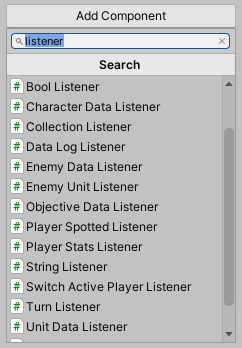
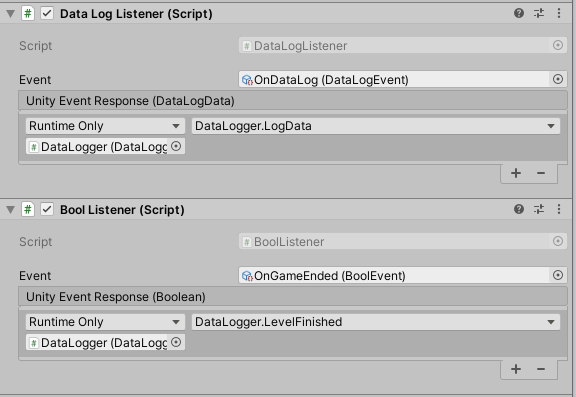
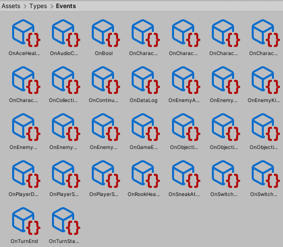
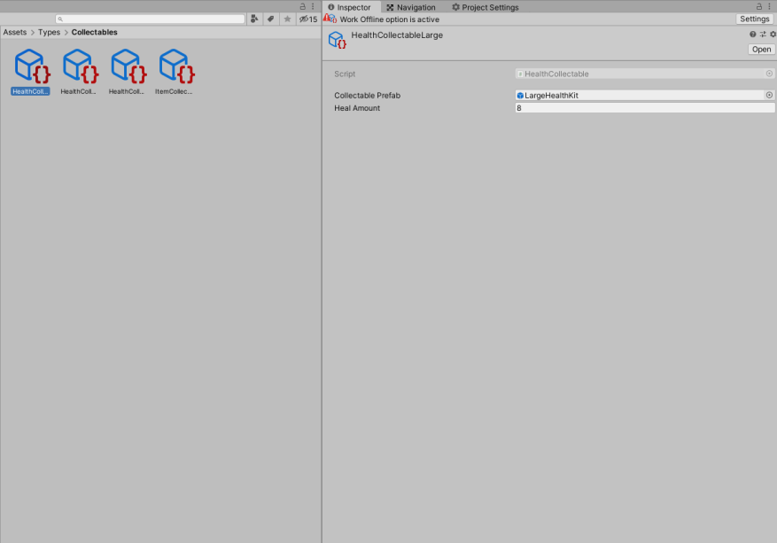
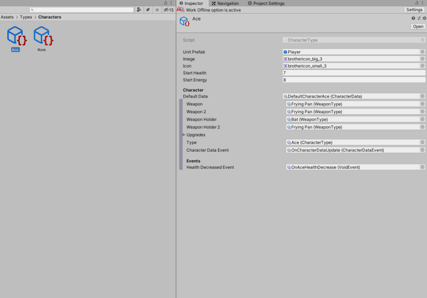
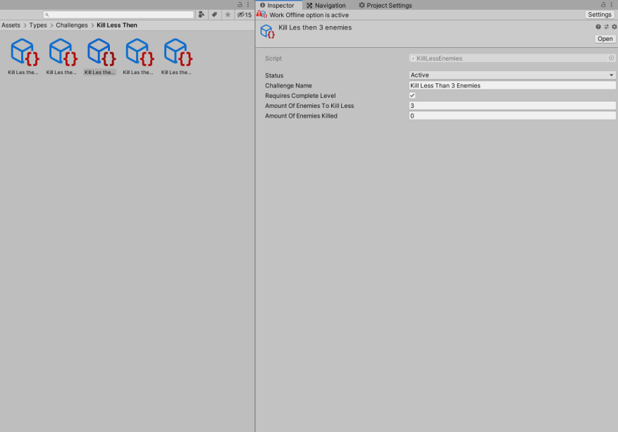

I wanted to see how far I can push Unity as a tools programmer regarding events. I had around 6 years of Unity experience before this project started which is why I felt confident to tackle this interesting problem. I came across this resource which is where the current implementation of the event system for Warfair is based upon.
Implementation of this system allowed technical designers and other programmers in the team to create their own events which resulted into faster iteration of already existing gameplay elements and faster implementation of new gameplay elements.
The images here show a few examples of event listeners that are in the project. Event listeners listen for certain events to be triggered. Events triggers but also events themselves can be created by everyone where events are scriptable objects. Scriptable objects can hold any data whatsoever which makes passing these event types around in the project very powerful.

Example of all the event listeners in Warfair

Example of an event listener that executes another function via the Unity event window

Example of all the event objects in Warfair
A code snippet on how an event can be invoked is shown here where the example here shows how the audio cue event is triggered in game
public void TriggerAudioCueEvent()
{
if (Application.isPlaying)
{
audioCueEvent.Invoke(new AudioCueData(audioCue, audioOwner));
}
} I set up automated builds with Jenkins through the Unity build pipeline. These builds ran on working days in the evening where it notified us in the morning when everyone put on their computers if something broke in the build.
Deploying to Itch.io is also something that is done through Jenkins. A single button click will build the project and upload to Itch.io. The uploading to Itch.io was done using Butler which is the automation tool of Itch.io.
The build script in Unity that is run by Jenkins can be found here.
Scriptable objects were heavily used in the development of Warfair. Here one can see some examples of scriptable objects that exist in the project.

Example of scriptable objects for health pickups

Example of scriptable objects for characters

Example of scriptable objects for challenges
I set up automated builds with Jenkins through the Unity build pipeline. These builds ran on working days in the evening where it notified us in the morning when everyone put on their computers if something broke in the build.
Deploying to Itch.io is also something that is done through Jenkins. A single button click will build the project and upload to Itch.io. The uploading to Itch.io was done using Butler which is the automation tool of Itch.io.
The build script in Unity that is run by Jenkins can be found here.
using System.Collections;
using System.Collections.Generic;
using UnityEditor;
using UnityEngine;
using BuildPipeline = UnityEditor.BuildPipeline;
public class BuildScript : MonoBehaviour
{
static void PerformBuild()
{
string[] defaultScene =
{
"Assets/Scenes/Main_Menu.unity",
"Assets/Scenes/Levels/Example.unity",
"Assets/Scenes/Levels/Generated.unity",
"Assets/Scenes/Levels/Tutorial.unity",
"Assets/Scenes/PostGame_Menu.unity"
};
BuildPipeline.BuildPlayer(
defaultScene,
"../Build/Windows/WarFair.exe",
BuildTarget.StandaloneWindows,
BuildOptions.None);
}
} I learned many things about continuous integration and analytics during development of this project. I learned how to work with Jenkins to an extend that Jenkins will perform other tasks than just building a project. One of the examples for this is my implementation with Itch.io and Jenkins. I also learned how analytics are seen in games and how analytics work in Unity.
I also learned how to act as a programming lead for a team of 6 programmers. We were split up into feature teams however the task of managing 6 programmers is something that can be a bit challenging when one has barely any knowledge about leading a team. Luckily this went quite well for me I think.
{% endblock project_specific %}